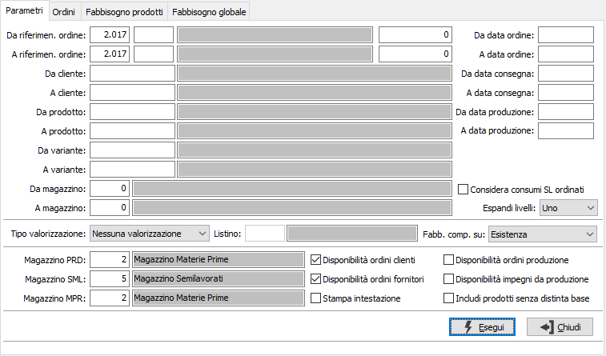
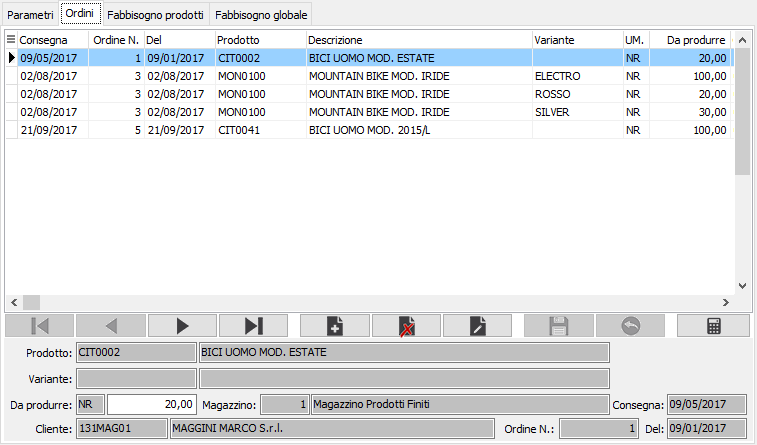
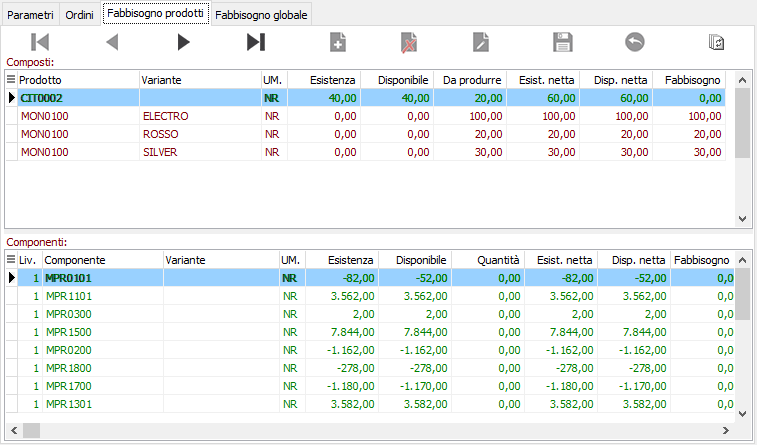
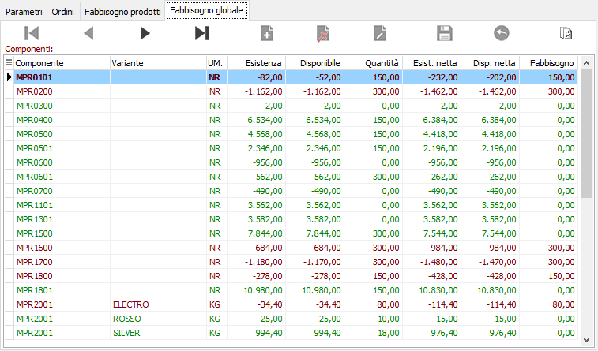
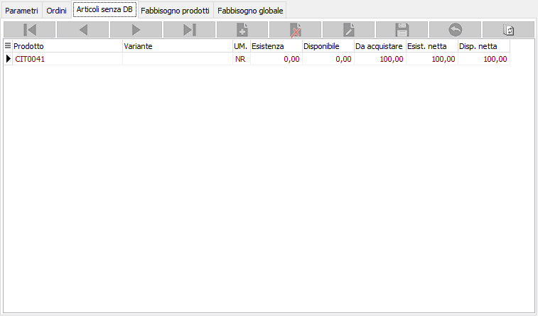

Analisi fabbisogni
La procedura consente di visualizzare i dati e produrre dei report relativi alle necessità produttive di ordini inseriti. La finestra è suddivisa in quattro linguette, la prima contiene i Parametri necessari all'analisi degli ordini.

DA RIFERIMENTO ORDINE: tre campi per contenere rispettivamente anno, causale e numero dell'ordine da cui si vuole iniziare la selezione. Confermando a vuoto, la selezione inizia dal primo ordine compatibile con gli altri parametri.
A RIFERIMENTO ORDINE: tre campi per contenere rispettivamente anno, causale e numero dell'ordine con cui si vuole terminare la selezione. Confermando a vuoto, la selezione termina con l'ultimo ordine compatibile con gli altri parametri.
DA DATA ORDINE: data dell'ordine da cui deve iniziare l’analisi degli ordini. Confermando a vuoto, l’analisi inizia con il primo ordine valido.
A DATA ORDINE: data dell'ordine con cui si desidera terminare l’analisi degli ordini. Confermando a vuoto, l’analisi si conclude con l'ultimo ordine valido.
DA CLIENTE: eventuale codice del cliente, presente in anagrafica clienti, da cui si vuole iniziare la selezione di analisi. Confermando a vuoto, la selezione inizia dal primo cliente valido. Sul campo sono attive le funzioni di ricerca (F9).
A CLIENTE: eventuale codice del cliente, presente in anagrafica clienti, con cui si vuole terminare la selezione di analisi. Confermando a vuoto, la selezione termina con l’ultimo cliente valido. Sul campo sono attive le funzioni di ricerca (F9).
DA DATA CONSEGNA: data di consegna da cui deve iniziare l’analisi degli ordini. Confermando a vuoto, l’analisi inizia con il primo ordine valido.
A DATA CONSEGNA: data di consegna con cui si desidera terminare l’analisi degli ordini. Confermando a vuoto, l’analisi si conclude con l'ultimo ordine valido.
DA PRODOTTO: eventuale codice dell'articolo, presente in anagrafica Prodotti, da cui si desidera iniziare la selezione di analisi. Confermando a vuoto, la selezione inizia con il primo prodotto valido. Sul campo sono attive le funzioni di ricerca (F9).
A PRODOTTO: eventuale codice dell'articolo, presente in anagrafica Prodotti, a cui si desidera terminare la selezione di analisi. Confermando a vuoto, la selezione termina con l’ultimo valido. Sul campo sono attive le funzioni di ricerca (F9).
DA DATA PRODUZIONE: data di produzione da cui deve iniziare l’analisi degli ordini. Confermando a vuoto, l’analisi inizia con il primo ordine valido.
A DATA PRODUZIONE: eventuale data di produzione con cui si desidera terminare l’analisi degli ordini. Confermando a vuoto, l’analisi si conclude con l'ultimo ordine valido.
DA VARIANTE: campo presente solo se attiva la gestione varianti. Eventuale codice della variante, da cui si desidera iniziare la selezione di analisi. Confermando a vuoto, la selezione inizia con la prima variante valida. Sul campo sono attive le funzioni di ricerca (F9).
A VARIANTE: campo presente solo se attiva la gestione varianti. Eventuale codice della variante, a cui si desidera terminare la selezione di analisi. Confermando a vuoto, la selezione termina con l’ultima variante valida. Sul campo sono attive le funzioni di ricerca (F9).
DA MAGAZZINO: eventuale codice del magazzino da cui si vuole iniziare la selezione degli ordini. Confermando a vuoto, la selezione considera tutti i magazzini validi. Sul campo sono attive le funzioni di ricerca (F9).
A MAGAZZINO: eventuale codice del magazzino con cui si vuole terminare la selezione degli ordini. Confermando a vuoto, la selezione considera tutti i magazzini validi. Sul campo sono attive le funzioni di ricerca (F9).
CONSIDERA CONSUMI SL ORDINATI: Definisce, nel caso in cui all'interno del calcolo siano presenti ordini relativi ad un prodotto che è anche componente di altre distinta (semilavorato), se l'eventuale "consumo" di giacenza/disponibile deve essere considerato nei fabbisogni oppure no.
ESPANDI LIVELLI: definisce se devono essere espansi i livelli della distinta base, mostrando i semilavorati ed i loro componenti tra i fabbisogni e determina fino a quale livello effettuare l'espansione.
TIPO VALORIZZAZIONE: definisce il metodo di valorizzazione del componente. Valori possibili:
Nessuna
Prezzo medio
Costo ultimo carico
Costo di mercato
Prezzo di vendita
Prezzo di listino
Come stabilito in distinta base
CODICE LISTINO: codice del listino prezzi da utilizzare per ricercare il costo del componente. Sul campo sono attive le funzioni di ricerca (F9) sulla tabella listini.
FABBISOGNO COMPOSTO SU: definisce il criterio per la determinazione della quantità utilizzata per il calcolo dei fabbisogni: da produrre, esistenza o disponibilità.
MAGAZZINO PRODOTTI: codice del magazzino da utilizzare per i progressivi dei prodotti. Sul campo sono attive le funzioni di ricerca (F9) sulla tabella magazzini. Viene proposto quello predefinito.
MAGAZZINO SEMILAVORATI: codice del magazzino da utilizzare per i progressivi dei semilavorati. Sul campo sono attive le funzioni di ricerca (F9) sulla tabella magazzini. Viene proposto, se attiva la gestione, quello riportato in configurazione produzione se presente il modulo.
MAGAZZINO COMPONENTI: codice del magazzino da utilizzare per i progressivi delle materie prime. Sul campo sono attive le funzioni di ricerca (F9) sulla tabella magazzini. Viene proposto quello riportato in configurazione produzione se presente il modulo.
DISPONIBILITÀ ORDINI CLIENTI: determina l'aggiunta al calcolo della disponibilità di magazzino dell'impegno derivante dagli ordini clienti (casella con segno di spunta). Viene proposto quanto come indicato nella configurazione produzione se presente il modulo.
DISPONIBILITÀ ORDINI FORNITORI: determina l'aggiunta al calcolo della disponibilità di magazzino dell'ordinato derivante dagli ordini fornitori (casella con segno di spunta). Viene proposto quanto come indicato nella configurazione produzione se presente il modulo.
DISPONIBILITÀ ORDINI PRODUZIONE: determina l'aggiunta al calcolo della disponibilità di magazzino dell'ordinato derivante dalla produzione (casella con segno di spunta).
DISPONIBILITÀ IMPEGNI DA PRODUZIONE: determina l'aggiunta al calcolo della disponibilità di magazzino dell'impegno derivante dalla produzione (casella con segno di spunta).
STAMPA INTESTAZIONE: indica se deve essere stampata come prima pagina del report una pagina contenente tutte le informazioni inerenti i criteri di selezione specificati per il report stesso (casella con segno di spunta).
INCLUDI PRODOTTI SENZA DISTINTA BASE: se spuntato mostra in una pagina apposita i prodotti senza distinta base.
La pressione del pulsante Esegui dà inizio all'elaborazione e riporta le righe ordini, risultato della selezione nella sezione Ordini.

Da questa sezione è possibile modificare la quantità presente su ogni rigo ed eventualmente inserire nuove righe che saranno considerate nel calcolo dei fabbisogni.
La pressione del pulsante Calcolo dà il via al calcolo effettivo dei fabbisogni che sarà visualizzabile nelle due sezioni successive. Fino a quando non sarà effettuato il calcolo non sarà possibile accedere alle sezioni successive.
La sezione Fabbisogni prodotti mostra nella sezione superiore i composti e per ognuno nella sezione inferiore i componenti; per ogni articolo sono indicate l'esistenza corrente, la disponibilità, il quantitativo da produrre per i composti e la quantità necessaria per i componenti, l'esistenza e la disponibilità nette e l'eventuale fabbisogno; nel caso sia stata richiesta la valorizzazione, per prodotto sarà visualizzato anche il valore. Sia i composti che i componenti sono visualizzati in colore verde se sufficienti, oppure in rosso se non sufficienti, in relazione alla quantità utilizzata per calcolare il fabbisogno selezionata nei parametri; nella sezione dei componenti è presente la colonna livello che riporta il livello del prodotto nella distinta base ed i semilavorati vengono evidenziati in grassetto. Sono attivi i tasti Anteprima e Stampa sulla toolbar principale per effettuare la stampa del report.

La sezione Fabbisogni globali mostra solo i componenti di tutti i prodotti per cui è stato richiesto il calcolo dei fabbisogni; per ogni articolo sono indicate l'esistenza corrente, la disponibilità, la quantità necessaria, l'esistenza e la disponibilità nette e l'eventuale fabbisogno. Anche in questa pagina i prodotti sono visualizzati in colore verde se sufficienti, oppure in rosso se non sufficienti, in relazione alla quantità utilizzata per calcolare il fabbisogno selezionata nei parametri.

La sezione Articoli senza DB, attiva solo se spuntata la relativa casella nella pagina dei parametri, mostra solo i prodotti che non hanno distinta base; per ogni articolo sono indicate l'esistenza corrente, la disponibilità, la quantità necessaria da acquistare, l'esistenza e la disponibilità nette. Sono attivi i tasti Anteprima e Stampa sulla toolbar principale per effettuare la stampa del report relativo.
